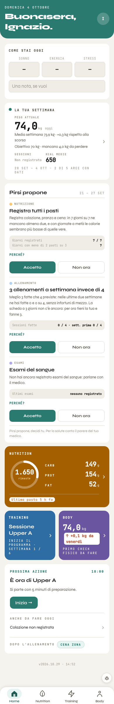

A sinistra la Home vera di oggi con la veste A accesa, fotografata dal banco a 390 px. A destra lo schizzo: gli stessi dati, gli stessi tasti e gli stessi passaggi. Cambiano l'ordine, la gerarchia, gli spazi e i caratteri. Nessuna logica nuova e nessun dato in più. I numeri gialli rimandano alle note.

Si parte con 5 minuti di preparazione.
Registra colazione, pranzo e cena: in 7 giorni su 7 ne mancano almeno due, e con giornate a metà le calorie sembrano più basse di quelle vere.
Meglio 3 fatte che 4 previste: nelle ultime due settimane ne hai fatte 0 e 0 su 4, senza infortuni di mezzo. La scheda a 3 giorni non c'è ancora: per ora tieni la tua e fanne 3.
Non hai ancora registrato esami del sangue: parlane con il medico.